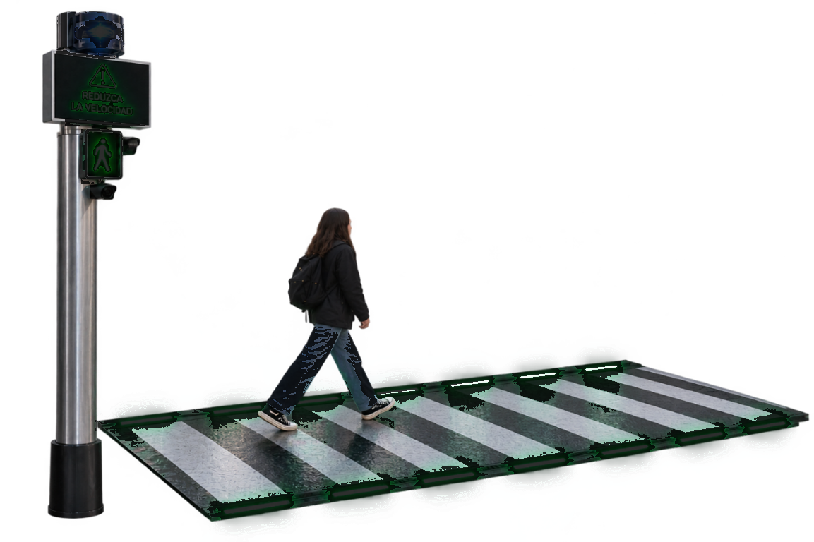

Infraestructura tecnológica activa para detectar peatones en tiempo real, alertar a conductores distraídos y prevenir siniestros viales.
Probar simuladorLa imagen mantiene al peatón fijo. Al iniciar la simulación se activan los avisos y el sensor según el horario y el clima seleccionados.
